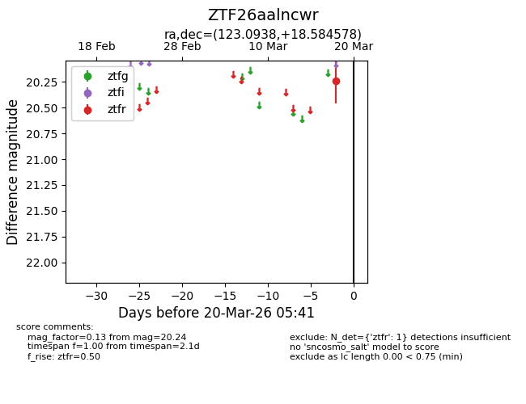
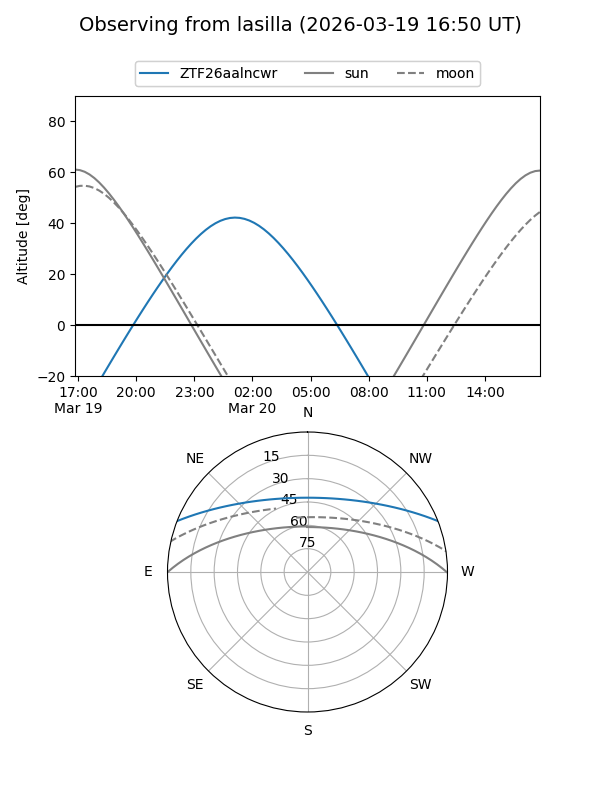
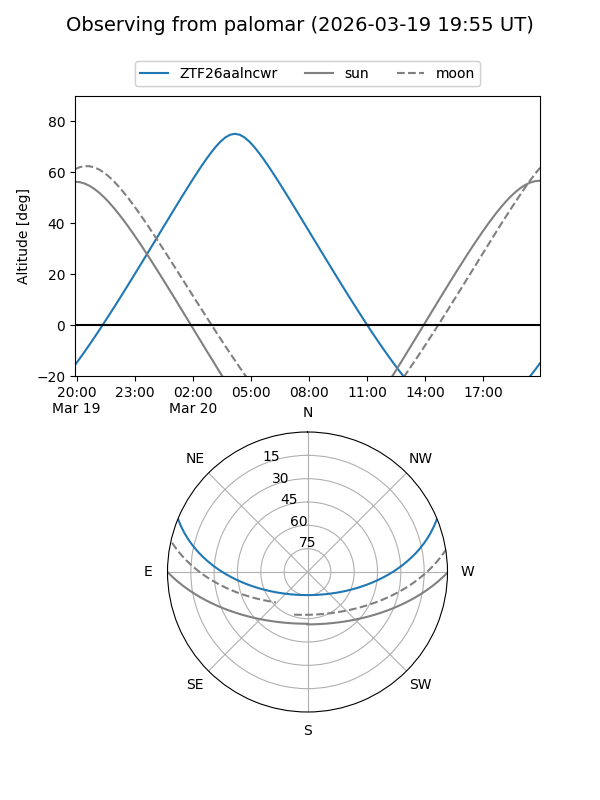

ZTF26aalncwr
Target ZTF26aalncwr at 2026-03-20 05:43
Aliases and brokers:
FINK: link
Lasair: link
ALeRCE: link
alt names
ZTF26aalncwr (ztf,fink_ztf)
Coordinates:
equatorial (ra, dec) = 123.0938,+18.58458
equatorial (HMS+DMS) = 08:12:22.51,+18:35:04.48
galactic (l, b) = (204.3535,+25.91799)
Flags:
Photometry:
last ztfr=20.24
1 ztfr detections
Lightcurve

Visibility


Additional plots